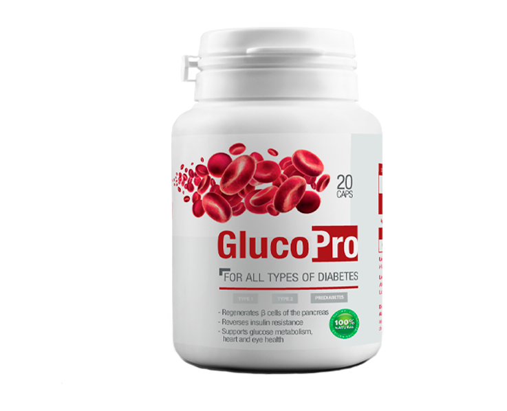

وفقًا لمنظمة الصحة العالمية ، يعد مرض السكري أحد الأسباب الرئيسية للوفاة المبكرة في العالم.
وفقًا للإحصاءات الرسمية ، يوجد حاليًا أكثر من 425 مليون شخص في العالم مصابون بمرض السكري. ومع ذلك ، وفقًا لخبراء الغدد الصماء ، فإن الرقم الفعلي هو ضعف الحجم: فالكثير من مرضى السكري لا يعرفون حتى عن مرضهم.
هل يمكن استبعاد تشخيص داء السكري إلى الأبد؟ هذه وغيرها من الأسئلة الهامة التي يجب الإجابة عليها من قبل رئيس الأطباء في معهد السكري ليستاري منتارشيه.
- تظهر الإحصاءات المستدامة والمخيبة للآمال أن عدد الأشخاص المصابين بالسكري من النوع الثاني في ارتفاع مستمر. ما هو السبب وما الذي يسبب هذا المرض؟
- في الماضي ، كان داء السكري من النوع 2 ، يُسمى بشكل مناسب مرض السكري أو مرضى السمنة من كبار السن. العامل الرئيسي في تطور هذا المرض هو السمنة ونمط الحياة المستقرة والعمر والاستعداد الوراثي.
يمكن القول إن وباء السكري مرتبط مباشرة بوباء السمنة. يؤثر الوزن الزائد في الجسم على وظيفة الجهاز الهضمي وعلى وجه الخصوص عمل البنكرياس الذي ينتج الهرمونات الضرورية لتكسير السكر - الأنسولين.
- هل هناك أي علامات يجب أن تنبه المريض لزيارة أخصائي الغدد الصماء؟
- نعم ، كانت العلامات موجودة ، لكنها ظهرت بالفعل مع ارتفاع مستويات السكر في الدم كثيرًا. وهي تشمل: جفاف الفم ، والعطش ، وكثرة التبول ، والضعف.
يمكن أن تظهر هذه الأعراض بعد سنوات عديدة من ظهور المرض. قد لا يظهر ارتفاع طفيف في مستويات السكر في الدم بأي شكل من الأشكال ، ولكن هذه الحالة لعدة سنوات يمكن أن تسبب مضاعفات خطيرة في الأوعية الدموية لمرض السكري.
لذلك ، يجب تشخيص الأشخاص المعرضين للخطر - الذين تزيد أعمارهم عن 40 عامًا والذين يعانون من زيادة الوزن - بانتظام من قبل أطباء الغدد الصماء.
- مرضى السكر المزدحم لا يدركون خطورة هذا المرض. أخبرنا كيف يؤثر مرض السكري على الأعضاء الداخلية ، ما هي العواقب؟
- لمرض السكري تأثير مدمر على جميع أعضاء الإنسان وأنظمته الداخلية. الحقيقة هي أن أوعيتنا الدموية ليست مصممة لضخ الدم "الحلو": الجلوكوز يتلف الأوعية الدموية الدقيقة في الكلى والعينين ، ويؤدي تدريجياً إلى الفشل الكلوي وفقدان البصر الكلي.
يزداد خطر الإصابة بتصلب الشرايين والشرايين التاجية لأوعية الدماغ بشكل كبير. ويؤدي تلف أوردة الساق في النهاية إلى الغرغرينا وبتر الأطراف.
- هل هناك علاج لمرض السكري تماما؟
- على مدى السنوات القليلة الماضية ، شاركت مؤسستنا ، جنبًا إلى جنب مع شركة أدوية كبيرة ، في تطوير دواء جديد لعلاج مرض السكري من النوع 2 أطلق عليه اسم .
في هذا الوقت ، يعد هذا هو الدواء الأكثر فاعلية الذي لا يحتوي على نظائرها.
- كيف يعمل ؟
- يقوي إفراز الأنسولين ويزيد من حساسية الجسم لهذا الهرمون ويقلل من مقاومة الأنسولين. بالإضافة إلى ذلك ، يتداخل مع امتصاص الكربوهيدرات في الأمعاء.
يضمن تناول الأدوية الشفاء التام لوظيفة البنكرياس. ونتيجة لذلك ، بدأ في إنتاج كمية كافية من الأنسولين بدون دواء.
- أي بعد تطبيق ، يتعافى الجسم تمامًا؟
- نعم. يتم أيضًا القضاء على جميع مضاعفات مرض السكري: يقوم بتطهير الأوعية الدموية من الكوليسترول اللويحي ، وتقليل ارتفاع ضغط الدم ، وتوفير العناصر الغذائية الكافية للجهاز العصبي. تعزيز فقدان الوزن من خلال تحييد السمنة ، وهي السبب الأكثر شيوعًا للمرض. قلل من الرغبة الشديدة في تناول السكر عن طريق منع مناطق طعم السكر الحساسة في اللسان.
جدير بالذكر أن هذا الدواء يحتوي على مكونات عشبية فقط. نتيجة لذلك ، لم يكن له عواقب سلبية على الجسم.
- أين يمكنك شراء ؟
- يُباع في الصيدليات ، لكن يصعب العثور عليه: إنه عقار جديد ، نادرًا جدًا. لذلك ، أنشأ المصنعون موقعًا على شبكة الإنترنت ، حيث يمكنك طلب بسعر التكلفة ، دون تكلفة إضافية من بائع التجزئة.
- ليستر ، شكرًا لك على مقابلة مفيدة للغاية. أعتقد أنك ساعدت الكثير من قرائنا.
ملاحظة تحريرية: رابط إلى الموقع ، حيث يمكنك شراء مرفق بسعر التكلفة أدناه.
عانت والدتي من مرض السكري لمدة 15 عامًا بالفعل. لقد طلبت ، أريده أخيرًا أن يبدأ في عيش حياة الناس العاديين
أنا أيضا مريض بالسكري. متعب جدا بسبب الحقن والقيود التي لا تنتهي ...
شكرا جزيلا
جدتي لديها الكثير من الأمراض ، وقبل عام ، بالإضافة إلى كل شيء ، تم تشخيصه أيضًا بمرض السكري. إنها قلقة للغاية بشأن هذا الأمر ، وهي تبكي ، وتخشى حدوث مضاعفات ، وبتر الأطراف ، والاعتماد على الأنسولين. من الصعب جدًا والمرير بالنسبة لنا ، نحن الأحفاد ، رؤيته. لذا شكرًا جزيلاً لك على هذا الدواء وشكرًا على المقالة التي تعرفنا عليها. بدأت الجدة بالفعل العلاج ، وقال إنه شعر بتحسن كبير بعد تناول الجرعة الأولى
أنا دائما غاضب لطبيب من أجل علاج للسرطان والإيدز - هذا الخبر على شفاه الجميع. وأعتقد أننا صيادلة مهتمون بأدوية السكري. لقد عثرت على مقالتك بالصدفة ، لكنني كنت مسرورًا جدًا بالأخبار حول . كان والدي مصابًا بمرض السكر ، لذلك طلبت له بعض الطرود في الحال
يا رفاق ، إذا كان أي شخص قد تلقى الطرد؟ كم عدد المنتظرين؟
سلمت لي في ثلاثة أيام
أبلغ من العمر 45 عامًا فقط وكنت أعاني من مرض السكري. لا أستخدم الأنسولين ، لكني ما زلت أتناول الكثير من الأدوية كل يوم ، أحاول اتباع نظام غذائي صارم (صعب للغاية) ، لكن زيادة السكر لا تزال شائعة. كلتا يدي مخدرتان ، لذلك بالكاد يمكنني حتى لمس إصبعي على أزرار الكمبيوتر (أنا مبرمج). المرض مزعج جدا للحياة. أنت تعطيني الأمل في حياة مرضية. أترك طلبات على موقع الويب الخاص بك ، ولا يمكنني الانتظار لبدء العلاج
لقد طلبت ذلك ، أريد حقًا أن أبدأ العلاج
أنا أيضا عانيت من مرض السكري. تعبت من محاربة المرض. أنا متفائل جدا على دوائك